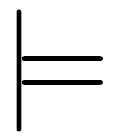

\[ \newcommand{\view}{\textrm{view}} \newcommand{\set}{\textrm{set}} \]
This is a brain-dump of how I think about lenses in isolation. I worked with the lens laws directly in the category of sets with functions. So the arguments are meaningful for all lens implementations. Mathematical parts may seem opaque if you are not used this kind of proof writing but this should not deceive you. The content is not deep and I am sure all of these are known to experts but I haven’t seen it written down like this anywhere else. ## A Characterization of Lenses
Let us recall the definition of a lens expressed in terms of its usual api, namely the functions \({\rm view}\) and \({\rm set}\).
Definition: Les \(S\) and \(A\) be sets. A lens from \(S\) to \(A\) is a tuple \[ \langle \view\colon S\to A,\, \set\colon S\to A\to S \rangle \] satisfying the following identities:
In this post I will derive a different and a little bit more geometric characterization of lenses. But before that we need two preliminary notions.
The first if the notion of a fiber of a function. Given a function \(\pi\colon S\to A\) and an element \(a\in A\), we define the fiber of \(\pi\) above \(a\) to be \[ \pi^{-1}(a) = \{s\in S | \pi(s) = a\}. \] Note that \(S\) is a disjoint union of fibers of \(\pi\). We denote the set of fibers of \(\pi\) by \(S/\pi\). So \(S/\pi\) is the set of equivalence classes of the relation defined by \(a_1\equiv a_2\) if and only if \(\pi(a_1)=\pi(a_2)\). We will also view \(S/\pi\) as a category whose objects are the equivalence classes and whose morphisms are the functions.
The second one is the notion of a codiscrete groupoid. Let \(A\) be any set. Define \(\mathcal{E}(A)\), the codiscrete groupoid on \(A\), to be the category whose objects are the elements of \(A\) and for any two elements \(a,b\in A\) the set \({\rm Hom}(a,b)\) has precisely one element. We will denote this element by \(\epsilon_{a,b}\). Note that \(\mathcal{E}\) is a groupoid, that is all morphisms are isomorphisms. Indeed \(\epsilon_{a,a} = {\rm Id}_a\) and \(\epsilon_{a,b}^{-1}\) is given by \(\epsilon_{b,a}\).
Now we can give our definition.
Definition: Let \(S\) and \(A\) be sets. A lens fibration from \(S\) to \(A\) is a tuple \[ \langle \pi\colon S\to A,\, F\colon\mathcal{E}(A)\to S/\pi \rangle \] where
Here is our claim: Let \(S\) and \(A\) be sets with \(S\neq\emptyset\). Then for a lens from \(S\) to \(A\) we can construct a lens fibration from \(S\) to \(A\). Similary, for a lens fibration from \(S\) to \(A\) we can construct a lens from \(S\) to \(A\). Moreover these constructions are inverse to each other.
Let’s begin. Fix \(S\) and \(A\) as in the claim.
Lens to fibration: Given a lens \(\langle \view,\, \set \rangle\) from \(S\) to \(A\) let us define \(\pi = \view\). First we need to show that \(\pi\) is surjective. Pick an \(s\in S\). Now for any \(a\in A\) we have \[ a = \view\,(\set\,s\,a) = \pi(\set\,s\,a). \] by the second lens rule. Thus \(a\) is in the image of \(\pi\). Now let us define the functor \(F\). We do not have choice on the action of \(F\) on the objects of \(\mathcal{E}(A)\): we must have \(F(a)=\pi^{-1}(a)\). For morphisms, we define \(F(\epsilon_{a,b})\colon\pi^{-1}(a)\to\pi^{-1}(b)\) by the rule \[ F(\epsilon_{a,b})(s) = \set\,s\,b. \] Let us first check that \(F(\epsilon_{a,b})\) does send the fiber above \(a\) to the fiber above \(b\). Let \(s\in\pi^{-1}(a)\). Then \[ \pi(F(\epsilon_{a,b})(s))=\pi(\set\,s\,b)= \view\,(\set\,s\,b) = b \] by the second lens rule. So \(F(\epsilon_{a,b})\) sends \(s\) to \(\pi^{-1}(b)\).
Now let us check the functor laws.
Fibration to lens: We will go in the opposite direction. Let \(\langle \pi,\, F \rangle\) be a lens fibration. Let \(\view = \pi\) and let \[ \set\,s\,a = F(\epsilon_{\pi(s),a})(s) \] for \(s\in S\) and \(a\in A\). Note that this makes sense since \(s\) is in the domain of \(F(\epsilon_{\pi(s),a})\), namely \(\pi^{-1}(\pi(s))\). Now let us prove the lens laws.
I will not prove that these constructions are inverse to each other –LaTeX is time consuming– but at this point it should not be too difficult to produce a proof.
A few observations are in order. Let \(\langle \pi,\, F \rangle\) be a lens fibration. Then all fibers of \(\pi\) are isomorphic because \(\mathcal{E}(A)\) is a connected and functors preserve isomorphism. This also means that for any \(a\in A\), \(S\) is isomorphic to \(A\times\pi^{-1}(a)\).
One can also view the notion of a lens fibration as a special case of a groupoid action defined, say, in section 10.4 of Topology and Groups by Ronald Brown. The orbits of this action are the equivalence classes of the equivalence relation on \(S\) defined by \[ s \equiv t \;\;\;\text{ if and only if }\;\;\; F(\epsilon_{\pi(s),\pi(t)})(s)=t. \] Each orbit intersects with all orbits exactly once tus restricting \(\pi\) to any one of them gives a bijection onto \(A\). So in addition to the “vertical” decomposition of \(S\) into orbits, we also have a “horizontal” decomposition into orbits.
This is a lot to take in. So let’s draw a picture explaining the situation.

It is time to see some examples with real code.
Let us begin with a good old fashioned record.